Documento de Arquitetura de Software
Histórico de Revisão
| Data | Versão | Descrição | Autor(es) |
|---|---|---|---|
| 10/06/2019 | 0.1 | Criação do Documento e Adição do template e do sumário | Daniel Maike |
| 11/06/2019 | 0.2 | Adição do tópico de Introdução | Daniel Maike |
| 11/06/2019 | 0.3 | Adição do tópico de Representação Arquitetural | Daniel Maike, Guilherme Guy |
| 11/06/2019 | 0.4 | Adição do tópico de Restrições e Metas Arquiteturais | Daniel Maike, Guilherme Aguiar |
| 11/06/2019 | 0.5 | Adição do tópico de Visão de Casos de Uso | Daniel Maike, Guilherme Aguiar |
| 12/06/2019 | 0.6 | Adição do tópico de Visão Lógica | Guilherme Guy, Daniel Maike |
| 13/06/2019 | 0.7 | Adição do tópico de Visão de Dados | Daniel Maike |
| 15/06/2019 | 0.8 | Adição do tópico de Visualização da Implementação | Gabriel Carvalho |
| 15/06/2019 | 0.9 | Ajuste de Escopo do Projeto | Guilherme Deusdará |
| 15/06/2019 | 0.10 | Ajuste Representação Arquitetural da Api | Guilherme Deusdará |
| 16/06/2019 | 0.11 | Adição do tópico Visão de Implementação | Ezequiel De Oliveira Dos Reis |
| 16/06/2019 | 0.12 | Adição do tópico Tamanho e Desempenho | Ezequiel De Oliveira Dos Reis |
| 18/06/2019 | 0.13 | Correção no tópico de Representação Arquitetural | Daniel Maike, Guilherme Guy |
| 18/06/2019 | 0.14 | Correção no tópico de Visão de Implementação | Daniel Maike, Guilherme Guy |
| 24/06/2019 | 1.0.0 | Adição das versões dos diagramas e dos programas utilizados no desenvolvimento | Daniel Maike, Guilherme Guy |
| 30/06/2019 | 1.0.1 | Adicionando zoom as imagens | Joberth Rogers |
Sumário
1. Introdução
1.1 Objetivo
1.2 Escopo
1.3 Definições, Acrônimos e Abreviações
1.4 Referências
1.5 Visão Geral
2. Representação Arquitetural
2.1 MWScanner
2.2 API
2.3 App
3. Restrições e Metas Arquiteturais
4. Visão de Casos de Uso
4.1 Atores
4.2 Diagrama UC
4.3 Descrição dos Casos de Uso
5. Visão Lógica
5.1 App
5.1.1 Visão Geral
5.1.2 Pacotes de Design Significativos do Ponto de Vista da Arquitetura
5.2 MWScanner
5.2.1 Visão Geral
5.2.2 Pacotes de Design Significativos do Ponto de Vista da Arquitetura
5.3 API
5.3.1 Visão Geral
5.3.2 Pacotes de Design Significativos do Ponto de Vista da Arquitetura
5.4 Realizações de Casos de Uso
6. Visualização da Implementação
6.1 Servidor MongoDB Atlas
6.2 Servidor da API (Heroku)
6.3 Dispositivo Móvel
6.4 Servidor do Gitlab CI
6.5 Matrícula Web
7. Visão da Implementação
7.1 Visão Geral
7.2 Camadas
7.2.1 Aplicativo
7.2.2 API
7.2.3 MWScanner
8. Visão de Dados
8.1 MongoDB
8.2 App
9. Tamanho e Desempenho
10. Qualidade
1. Introdução
1.1 Objetivo
Este documento tem como finalidade fornecer uma visão arquitetural abrangente do sistema Unigrade, por meio de diversas visões arquiteturais para representar diferentes aspectos da aplicação. Com o propósito de demonstrar as decisões arquiteturais tomadas no desenvolvimento do Unigrade.
1.2 Escopo
O sistema tem como objetivo sanar o problema que os alunos da Universidade de Brasília possuem para montar grade horária. Muitas disciplinas chocam horário e ainda ter que encaixar a grade com compromissos pessoais se torna um problema. O Unigrade tem como finalidade:
- Visualizar disciplinas da Universidade de Brasília;
- Visualizar fluxo de disciplinas do curso;
- Escolher disciplinas e suas turmas, e receber sugestões de grades horárias com as disciplinas escolhidas;
- Visualizar grade horária montada.
1.3 Definições, Acrônimos e Abreviações
As Definições, Acrônimos e Abreviações para entendimento do documento são:
- UnB: Universidade de Brasília
- FGA: Faculdade do Gama - Campus da Universidade de Brasília
- API: Application Programming Interface (Interface de Programação de Aplicativos)
- REST: Representational State Transfer (Transferência de Estado Representacional)
- HTTP: Hypertext Transfer Protocol (Protocolo de Transferência de Hipertexto)
- IDE: Integrated Development Environment (Ambiente de Desenvolvimento Integrado)
- App: Application (Aplicativo)
- MVC: Model-View-Controller
- DAO: Data Access Object (Objeto de Acesso a Dados)
- UC: Use Case (Caso de Uso)
- DSW: Desenho de Software
1.4 Referências
As referências aplicáveis são:
- https://sce.uhcl.edu/helm/RationalUnifiedProcess/webtmpl/templates/a_and_d/rup_sad.htm#1.%20%20%20%20%20%20%20%20%20%20%20%20%20%20%20%20%20%20Introduction
- https://www.cin.ufpe.br/~gta/rup-vc/extend.formal_resources/guidances/examples/resources/sadoc_v1.htm
- https://www.cin.ufpe.br/~gta/rup-vc/core.informal_resources/guidances/examples/resources/ex_sad.htm
1.5 Visão Geral
Este documento visa detalhar as soluções arquiteturais desenvolvidas no sistema. Deste modo, neste documento serão abordados os seguintes aspectos:
- Representação Arquitetural
- Restrições e Metas Arquiteturais
- Visão de Casos de Uso
- Visão Lógica
- Visão de Processos
- Visualização da Implementação
- Visão de Dados
- Tamanho e Desempenho
- Qualidade
2. Representação Arquitetural
O sistema é composto de três frentes e um banco de dados:
- WebScraper em Python, denominado MWScanner, responsável pela extração dos dados do Matrícula Web e salvar no banco de dados MongoDB
- Banco de dados MongoDB, hospedado no Atlas, salva os dados para serem utilizados pela API
- API NodeJS, recupera os dados do banco de dados e os apresenta no APP por meio de requisições, além de recuperar os dados, é responsável pela montagem de grades horárias de acordo com as disciplinas adicionadas no App
- App Android em Java, apresenta os dados capturados por meio de requisições na API e manda as disciplinas adicionadas para que as grades horárias sejam montadas e recuperadas por meio de outra requisição para serem apresentadas
Versão 1.0
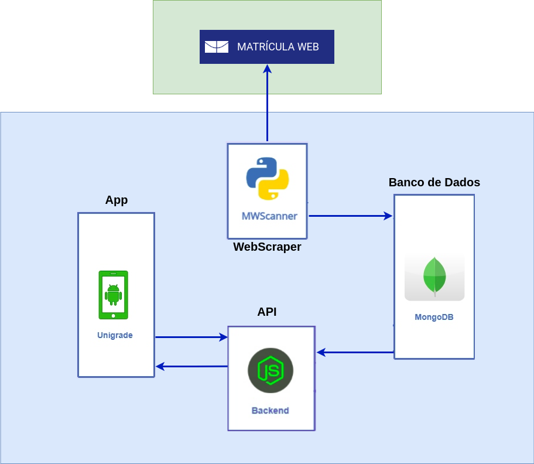
{kind=link}
Cada frente possui sua própria arquitetura interna.
2.1 MWScanner
O MWScanner possui duas camadas e a main:
-
Camada WebScraper, responsável por acessar páginas do Matrícula Web e de acordo com a necessidade varrer o código HTML das páginas e extrair os dados presentes nelas
-
Camada DatabaseConfig, responsável por fazer a conexão com o banco de dados MongoDB hospedado no Atlas, capturar os dados extraídos e salvá-los em um banco de dados MongoDB
-
A main, responsável por executar os códigos das duas camadas e criar threads para executá-los em paralelo devido grandes quantidades de dados
O MWScanner funciona como um Cliente do Estilo Arquitetural Cliente-Servidor, através de requisições ele se comunica com o Servidor Matrícula Web para extrair o código HTML e filtrar os dados necessários.
Versão 1.0
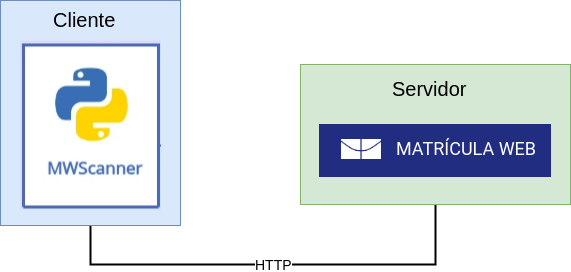
{kind=link}
2.2 API
A arquitetura da API baseada em um estilo arquitetural de camadas, possuindo três camadas, sendo uma API REST (Representational State Transfer). Há a camada Controller, que abriga o código responsável por executar os endpoints da API, a camada Model que proporciona esquemas para acesso aos objetos que estão no banco de dados e uma camada Algorithm para abrigar os algoritmos e suas dependências, utilizados para gerar grades horárias. REST é um estilo de arquitetura de software que define o conjunto de regras a serem usadas para criar serviços da Web. Ele permite que os sistemas solicitem acesso e manipulem recursos da Web usando um conjunto de regras uniformes e predefinidas. A interação em sistemas baseados em REST ocorre por meio do HTTP.
2.3 APP
O aplicativo possui um estilo arquitetural de 4 camadas, com uma arquitetura baseada no padrão MVC, voltada para funcionar em um sistema Android. Além das camadas de Model, View e Controller, existe uma camada DAO que é responsável pelo acesso ao banco de dados do aplicativo.
Versão 1.0
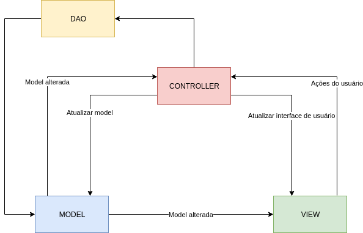
{kind=link}
3. Restrições e Metas Arquiteturais
Requisitos e restrições do sistema que influenciam na arquitetura:
- É necessária a conexão com internet para utilização do App;
- Nenhuma informação pessoal do usuário será armazenada;
- A aplicação terá suporte somente para Android;
- A IDE utilizada para o desenvolvimento do App é o Android Studio versão 3.4.1;
- Os dados extraídos do Matrícula Web serão armazenados no banco de dados MongoDB versão 4.0.10, hospedado no Atlas;
- Os dados de disciplinas adicionadas pelo usuário serão persistidas com um banco de dados local SQLite, importado no Android SDK 28, build-tools 28.0.3;
- A equipe possui 9 integrantes;
- A aplicação deve ser terminada até o final da disciplina de DSW.
4. Visão de Casos de Uso
4.1 Atores
| Atores | Descrição |
|---|---|
| Usuário | O utilizador da plataforma, estudante da UnB que deseja assistência para criar suas grades do semestre. |
| NodeAPI | API responsável pela conexão entre o usuário e o banco de dados. |
4.2 Diagrama UC
Versão 1.0
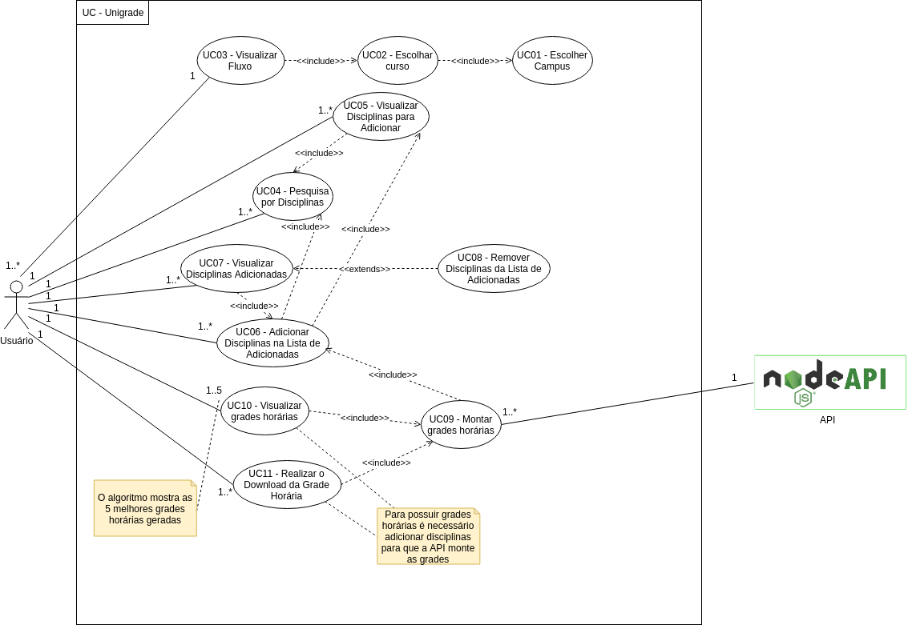
{kind=link}
4.3 Descrição dos Casos de Uso
| Caso de uso | Descrição do caso de uso |
|---|---|
| UC01 - Escolher Campus | O usuário escolhe o campus da UnB em que ele estuda. |
| UC02 - Escolher Curso | O usuário escolhe o curso que ele faz. |
| UC03 - Visualizar Fluxo | O usuário pode visualizar o fluxo de disciplinas do curso selecionado. |
| UC04 - Pesquisar por disciplinas | O usuário realiza uma pesquisa de matérias pelo nome da disciplina. |
| UC05 - Visualizar disciplinas para adicionar | O usuário pode visualizar pode visualizar as disciplinas para adicionar após a pesquisa. |
| UC06 - Adicionar disciplinas na lista de adicionadas | O usuário pode adicionar as disciplinas ao clicar em uma disciplina e marcar o checkbox. |
| UC07 - Visualizar disciplinas adicionadas | O usuário pode visualizar as disciplinas adicionadas. |
| UC08 - Remover disciplinas da lista de adicionadas | O usuário pode remover as disciplinas ao clicar em uma disciplina e marcar o checkbox. |
| UC09 - Montar grades horárias | O usuário solicita a criação das grades a partir das matérias adicionadas. |
| UC10 - Visualizar grades horárias | O usuário pode visualizar as grades geradas pela aplicação. |
| UC11 - Realizar o download da grade horária | O usuário pode realizar o download da grade horária em seu smartphone. |
5. Visão Lógica
5.1 App
5.1.1 Visão geral
Para o aplicativo, sua visão geral é composta de quatro pacotes:
- View
Contém classes responsáveis por exibir conteúdos para o usuário final. Também possui módulos para implementação de Adapters, execução de tarefas assíncronas, como aguardar uma resposta da API para exibir conteúdo. - Controller
Possui classes que são responsáveis pela execução de código que prepara os dados para sua exibição na view, também são responsáveis por controlar as chamadas à API e despachar o resultado para o local adequado, seja uma View que esteja aguardando ou outros objetivos. - Model
Classes que fazem representação dos dados que o aplicativo deve persistir localmente, como matérias que o usuário escolheu ou seu curso. Essas classes também contém algumas operações específicas aos seus objetos. - DAO
Camada responsável por conter classes que acessam e manipulam dados, seja para concretizar chamadas a API, ou escrever Models no banco de dados local.
5.1.2 Pacotes de Design Significativos do Ponto de Vista da Arquitetura
Versão 1.0
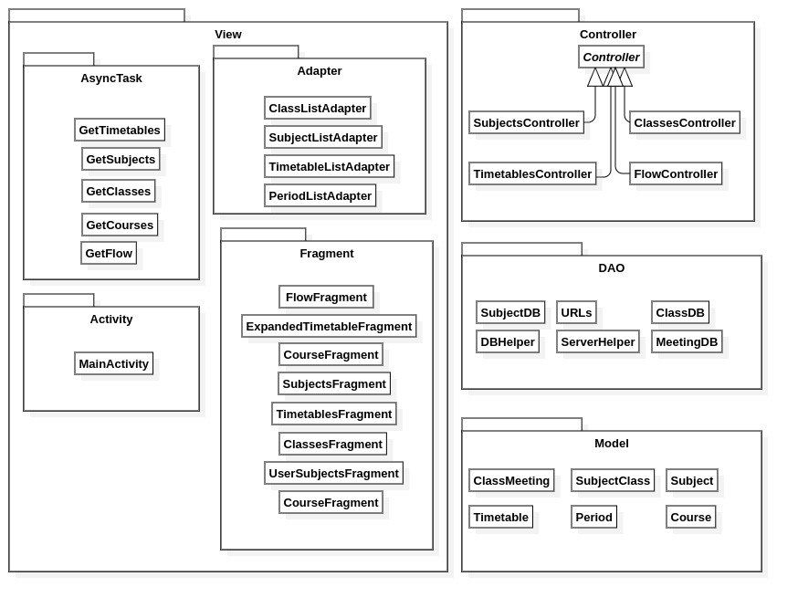
{kind=link}
5.2 MWScanner
5.2.1 Visão geral
O MWScanner possui dois pacotes:
- Webscrapper
Possui classes responsáveis extração, limpeza e manipulação dados obtidos de páginas web específicas. - DatabaseConfig
Possui classes responsáveis pela persistência dos dados coletados na camada Webscrapper, por criar a conexão com um banco de dados Mongo e escrever nele.
5.2.2 Pacotes de Design Significativos do Ponto de Vista da Arquitetura
Versão 1.0
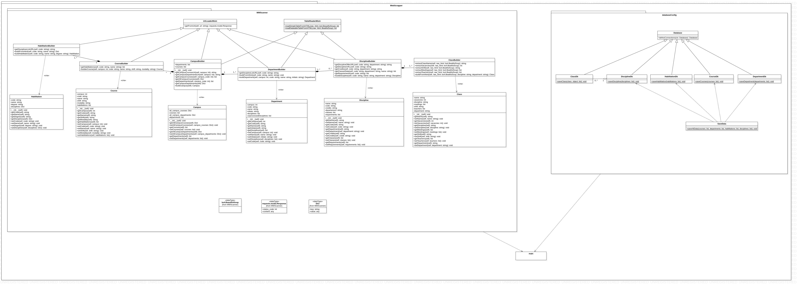
{kind=link}
5.3 API
5.3.1 Visão geral
A API é composta por três pacotes:
- Models
Classes que representam os dados em forma de esquemas, para disponibilizar funções de acesso ao banco de dados por meio do pacote externo Mongoose. - Controller
Classes que representam a lógica principal da API, os endpoints da API são gerenciados por Controllers. - Algorithm
Abriga as classes que são relacionadas ao algoritmo de geração de grades horárias. Possui um sub-pacote que contém Restrictions, objetos usados pelo algoritmo.
5.3.2 Pacotes de Design Significativos do Ponto de Vista da Arquitetura
Versão 1.0
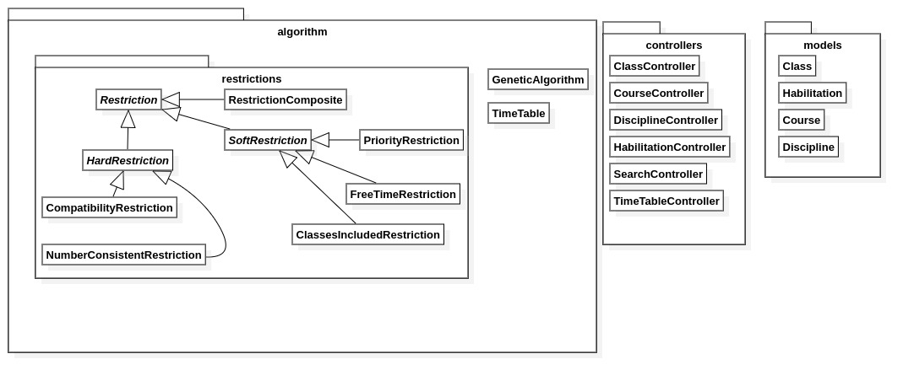
{kind=link}
Versão 1.0
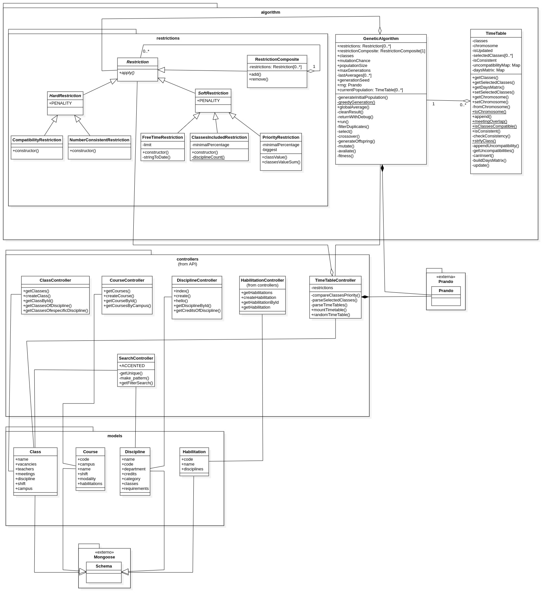
{kind=link}
5.4 Realizações de Casos de Uso
Versão 1.0
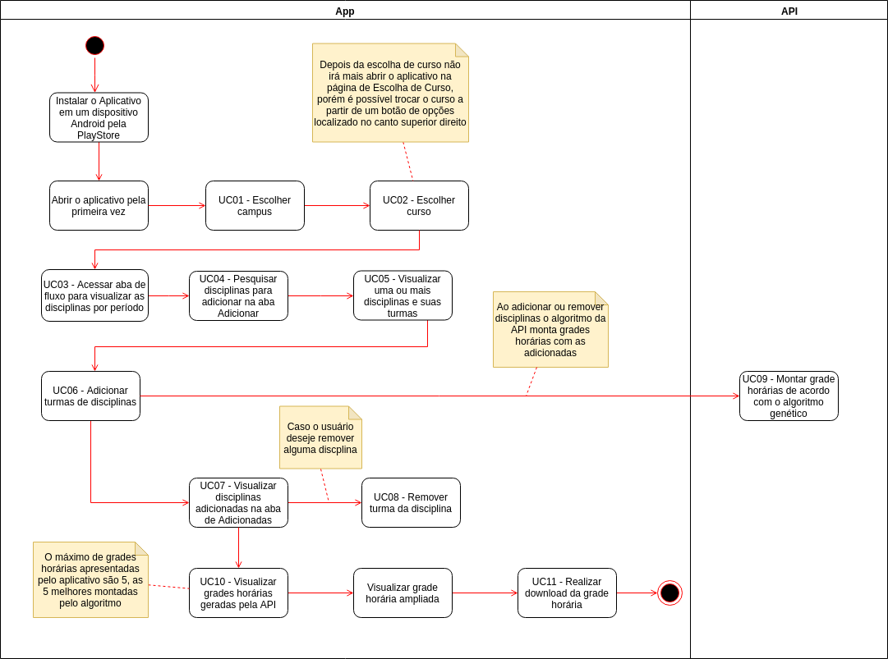
{kind=link}
6. Visualização da Implementação
O diagrama de implementação a seguir, representa os nós físicos do sistema e a maneira como eles se comunicam.
Versão 1.0
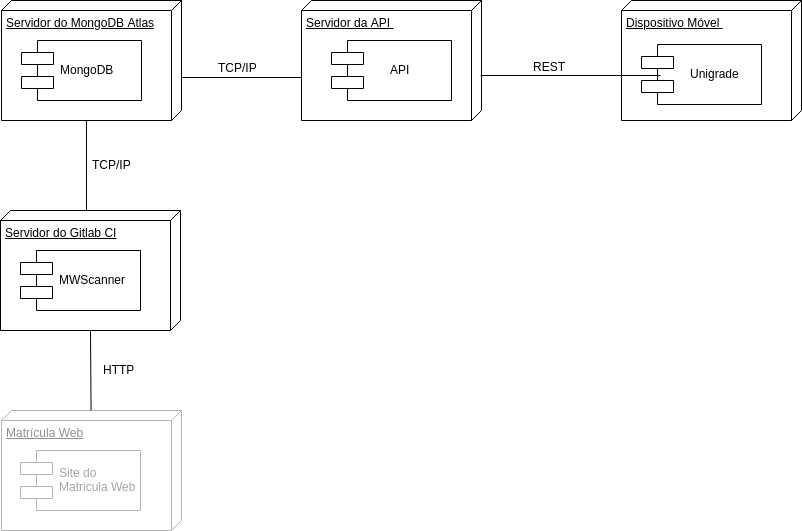
{kind=link}
6.1 Servidor MongoDB Atlas
Servidor do MongoDB Atlas é onde está armazenado o banco de dados contendo todas as informações utilizadas pelo sistema.
6.2 Servidor da API (Heroku)
Servidor da API é onde está o backend (API) que faz todo o envio de informações, seguindo o padrão REST, para o aplicativo do Unigrade instalado em um dispositivo Android.
6.3 Dispositivo Móvel
É o dispositivo Android em que o aplicativo de unigrade será instalado.
6.4 Servidor do Gitlab CI
Servidor onde está o MWScanner, script que faz a coleta de dados do Matrícula Web e armazena no banco de dados.
6.5 Matrícula Web
Site da Universidade de Brasília, onde os estudantes fazem suas matrículas e site no qual o MWScanner coleta os dados de cursos, matérias, turmas e professores.
7. Visão da Implementação
7.1 Visão Geral
O estilo arquitetural de quatro camadas seguido no aplicativo Android do Unigrade, é um padrão MVC com DAO, o sistema foi dividido nas camadas: Model, View, Controller e DAO.
A API, feita em NodeJS, está usando um padrão arquitetural composto de três camadas, que são: Model, Controller e Algorithm.
O MWScanner possui duas camadas e atua como Cliente do Estilo Arquitetural Cliente-Servidor, fazendo requisições ao Servidor Matrícula Web para extrair o código HTML e filtrar os dados necessários para a aplicação.
7.2 Camadas
7.2.1 Aplicativo
-
Model
A aplicação do Unigrade possui a camada Model para representação dos dados que são persistidos. -
View
A camada View, onde fica as classes que ficam responsáveis pela interface entre a aplicação e o usuário. -
Controller
A Controller, é a camada responsável pela comunicação entre a View e a Model, ou seja a controller leva os dados para o usuário -
DAO
A DAO é responsável pelos acessos ao banco de dados SQLite da aplicação, é a camada em que possui todo código SQL, que cria o banco de dados e possui os métodos de acesso das tabelas.
7.2.2 API
-
Model
A camada da Model na API é responsável pela representação do esquema dos dados armazenados, disponibilizando funcionalidades de acesso ao banco de dados. -
Controller
Na API a camada controller processa os dados para serem apresentados para seus clientes nos endpoints disponíveis na API, sejam eles uma aplicação cliente e o próprio aplicativo Unigrade. -
Algorithm
A camada de Algorithm abriga algoritmos para a geração de grades horárias e os objetos necessários para a execução destes algoritmos. Há um algoritmo ambicioso, um algoritmo genético evolutivo (e suas restrições).
7.2.3 MWScanner
-
WebScraper
A camada de extração dos dados, acessa as páginas do Matrícula Web que possuem dados necessários para a aplicação, extrai o código HTML e filtra os dados necessários para serem salvos. -
DatabaseConfig
Faz a conexão com o banco de dados MongoDB hospedado no Atlas, captura e salva os dados extraídos pela camada de extração em collections no MongoDB Atlas.
8. Visão de Dados
8.1 MongoDB
No banco de dados MongoDB são armazenados pelo MWSCanner os dados de todo os cursos, habilitações, departamentos, disciplinas e turmas, da UnB. Para armazenar estes dados a Database mwscanner possui 5 Collections:
- courses (cursos)
Armazena o código do curso, código do campus que ele pertence, nome, turno, modalidade e as habilitações que ele possui.
Versão 1.0
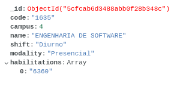
{kind=link}
- habilitations (habilitações)
Armazena o código da habilitação, nome e as disciplinas por cada período da habilitação.
Versão 1.0
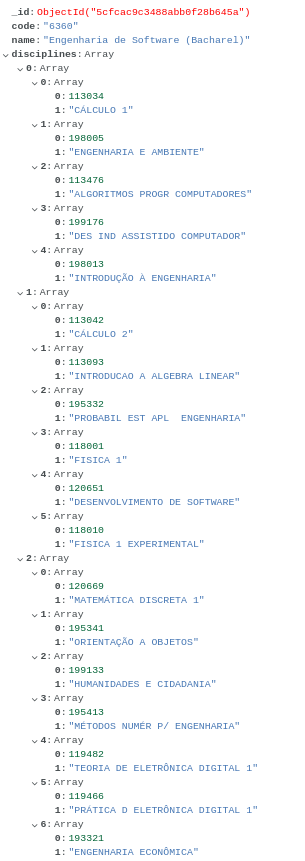
{kind=link}
- departments (departamentos)
Armazena o código do campus em que ele pertence, código do departamento, nome, iniciais e disciplinas que ele possui.
Versão 1.0
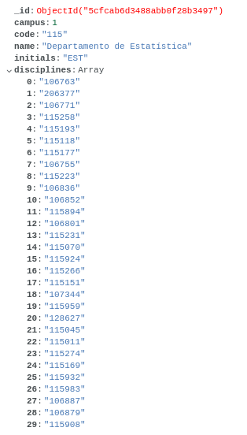
{kind=link}
- disciplines (disciplinas)
Armazena o nome da Disciplina, código da disciplina, código do departamento em que a disciplina pertence, as turmas que ela possui, os pré-requisitos e os créditos.
Versão 1.0
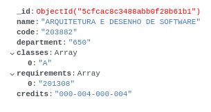
{kind=link}
- classes (turmas)
Armazena o nome da Turma, número de vagas, código da disciplina a que a turma pertence, os encontros (dias, horários e local), turno, professor(es) e o código do campus a que a disciplina pertence.
Versão 1.0
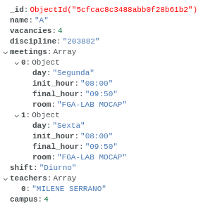
{kind=link}
8.2 App
Na aplicação é utilizado um banco de dados SQLite para persistir os dados das disciplinas e turmas adicionadas pelo usuário
Versão 1.0

9. Tamanho e Desempenho
O Aplicativo do Unigrade possui tamanho em disco de 6.40MB é desenvolvido para a plataforma móvel Android, entretanto o sistema foi construído visando o desempenho do aparelho em que será instalado.
A API não tem espaço físico quando é instalado como o aplicativo, a API não é instalada, e representada por um servidor rodando em nuvem, respondendo as requisições, e tal sistema foi construído com foco na otimização da resposta das requisições, por conta dos dados a serem processados, se não houver certo cuidado, pode demorar a responder o aplicativo.
10. Qualidade
A arquitetura utilizada contribui para com o software em diversos aspectos. Os padrões arquiteturais das nossas principais frentes do sistema (API e APP) contribuem para a escalabilidade da aplicação, pois contribui altamente para a separação clara de responsabilidades e seus componentes podem ser facilmente substituídos por outros de sua própria implementação. Essa característica da clara separação de conceitos do MVC trás diversos outros benefícios para a aplicação em geral, como testabilidade e manutenabilidade.